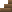

Warpage Guidebook
Tiles
Anvil
Astral Portal
Bed
Bedrock
Blue Sand
Blue Stone
Bottle
Brick
Carved Stones (stone, blue stone, marble, sand brick, pyrite)
Cloth
Cocoon
Cursed Stone
Dirt
Door
Earth Portal
Forge
Gel (Green Ore)
Glass
Glitterstone
Glow Mushroom
Gold Ingot
Gold Tapestry
Grass
Iron Ingot
Iron Ore
Loom
Loose Stone
Marble
Marble Pillar
Moss
Mossy Stone
Pink Flower
Pyrite (Pyrite Ore)
Pyrite Block
Sand
Sand Brick
Silexium Ingot
Silexium Ore
Spiral Grass
Stairs (wooden, brick, sand brick, marble, blue stone)
Star Shard
Stone
Sulfur
Sylvan Portal
Tapestry
Thornbush
Torch
Transmutation Table
Wood
Wooden Boards
Realms
Terrestrial
Astral
Sylvan
Tools, weapons, and equipment
Beam Rod
Chisel
Glass Knife
Gold Pick
Health Potion
Iron Axe
Iron Pick
Iron Shield
Iron Sword
Jump Amulet
Mining Helmet
Sage Orb
Silexium Pick
Silexium Shield
Silexium Sword
Stone Axe
Stone Pick
Thorny Shield
Wooden Sword
Plants
Cherry Tree
Cosmic Sprout
Nut Tree
Pine Tree
Mobs
Blader
Puff
Silkworm
Tiles
Anvil
Crafted from iron ingots. Affected by gravity. Used to craft iron pick, iron axe, iron sword, iron shield, chisel, mining helmet, silexium pick, silexium sword, and silexuim shield.
Astral Portal
Crafted from glitterstone. Created in another realm when a portal is used in the Astral Realm if there is no return portal. Transports user to the Astral Realm (using down key).
Bed
Crafted from wood and cloth. Affected by gravity. Standing directly on bed and pressing the down key will regenerate health.
Bedrock
Found in Terrestrial realm, at the bottom of the map. Requires silexium pick or better to mine. Drops stone when mined.
Blue Sand
Found in Astral realm. Affected by gravity.
Blue Stone
Found in Astral relam. Requires iron pick or better to mine. Can be chiseled. Used to craft blue stone stairs.
Bottle
Crafted from glass at a forge. Non-solid. Affected by gravity. Used to craft health potion.
Brick
Crafted from stone. Drops stone when mined. Used to craft brick stairs.
Carved Stones

Stone, marble, sand brick, blue stone, and pyrite can be turned into decorative variants using a chisel. Drop their respective non-carved forms when mined.
Cloth
Crafted from cocoons at a loom. Non-solid. Affected by gravity. Used to craft bed, and to craft tapestry and gold tapestry at a loom.
Cocoon
Found in Sylvan realm, produced by silkworms. Non-solid. Used to craft cloth at a loom.
Cursed Stone
Found in Sylvan realm, in cursed vaults. Requires gold pick to mine. Cannot be picked up.
Dirt
Found in Terrestrial realm, except in deserts. Solid, not affected by gravity. Required for planting grass, trees, cherry trees, and pine trees.
Door
Crafted from wood. Can be right clicked to toggle between solid and non-solid.
Earth Portal
Created in another realm when a portal is used in the Terrestrial Realm if there is no return portal. Transports user to the Terrestrial Realm (using down key).
Forge
Crafted from stone and torch. Gives light. Used to craft iron ingot, glass, bottle, glass knife, jump amulet, and silexium ingot.
Gel (Green Ore)

Green ore is found in the Terrestrial Realm. Mining green ore requires a pick and drops gel. Jumping while standing on gel will allow user to jump higher.
Glass
Crafted from sand at a forge. Used to craft bottle, jump amulet, and glass knife at a forge.
Glitterstone
Found in Terrestrial realm, near the bottom of the map. Requires iron pick or better to mine. Used to craft Astral portal and transmutation table, and to craft beam rod at a transmutation table.
Glow Mushroom
Found in Sylvan realm. Non-solid. Gives light.
Gold Ingot
Found in pyramids (in Terrestrial Realm deserts). Crafted from iron ingot at transmutation table. Non-solid. Affected by gravity. Used to craft gold pick. Used to craft beam rod at a transmutation table, and to craft gold tapestry at a loom.
Gold Tapestry
Crafted from cloth and gold ingot at a loom. Non-solid.
Grass
Found in Terrestrial realm, except in deserts. Non-solid. Affected by gravity. Can only be placed on dirt.
Iron Ingot
Crafted from iron ore at a forge. Dropped by bladers upon death. Non-solid. Affected by gravity. Used to craft anvil, and to craft iron pick, iron sword, iron axe, iron shield, chisel, and mining helmet at anvil. Can be turned into gold ingot at a transmutation table.
Iron Ore
Found in Terrestrial realm. Dropped by bladers upon death. Requires stone pick or better to mine. Used to craft iron ingot.
Loom
Crafted from wood and cocoon. Non-solid. Affected by gravity. Used to craft cloth, tapestry, and gold tapestry.
Loose Stone
Found in Terrestrial Realm, except in deserts. Affected by gravity. Used to craft stone pick and stone axe.
Marble
Found in Terrestrial Realm. Crafted from stone at transmutation table. Requires iron pick or better to mine. Can be chiseled. Used to craft marble pillar, marble stairs, and transmutation table.
Marble Pillar
Crafted from marble. Requires iron pick or better to mine.
Moss
Found in Sylvan realm. If stone is placed directly above moss, it will become mossy stone.
Mossy Stone
If stone is placed directly above moss, it will become mossy stone. Requires stone pick or better to mine. Drops stone when mined.
Pink Flower
Dropped by cherry trees. Non-solid. Affected by gravity. A Sylvan portal can be constructed by placing a block of wood on the ground, planting a tree on either side of it, and then placing a flower on top of the wood.
Pyrite
Pyrite ore is found in the Terrestrial Realm's bedrock layer. It requires a silexium pick or better to mine and drops pyrite. Pyrite is non-solid and affected by gravity, and can be used to craft pyrite block.
Pyrite Block
Crafted from pyrite. Requires stone pick or better to mine. Can be chiseled.
Sand
Found in Terrestrial realm deserts. Affected by gravity. Used to craft glass at a forge. Can be turned into sand brick at a transmutation table.
Sand Brick
Found in pyramids in Terrestrial realm deserts. Crafted from sand at transmutation table. Requires stone pick or better to mine. Can be chiseled. Used to craft sand brick stairs.
Silexium Ingot
Crafted from silexium ore at a forge. Non-solid. Affected by gravity. Used to craft silexium pick, silexium sword, and silexium shield at anvil.
Silexium Ore
Found in the Astral realm. Requires iron pick or better to mine. Used to craft silexium ingot at a forge.
Loose Stone
Found in Terrestrial Realm, except in deserts. Affected by gravity. Used to craft stone pick and stone axe.
Stairs
Crafted from wooden boards, brick, sand brick, marble, or blue stone. Allows vertical transportation without having to jump.
Star Shard
Found in Astral realm. Non-solid. Provides light. Used to craft mining helmet at anvil.
Stone
Found in Terrestrial Realm. Requires stone pick or better to mine. Used to craft brick and forge. Can be turned into marble at a transmutation table. Placing stone on top of moss will turn it into mossy stone. Stone is dropped by brick, bedrock, and mossy stone.
Sulfur
Found in Terrestrial Realm. Requires stone pick or better to mine. Used to craft torch.
Sylvan Portal
A Sylvan portal can be constructed by placing a block of wood on the ground, planting a tree on either side of it, and then placing a flower on top of the wood. Created in another realm when a portal is used in the Sylvan Realm if there is no return portal. Transports user to the Sylvan Realm (using down key).
Tapestry
Crafted from cloth at a loom. Non-solid.
Thorn Bush
Found in Sylvan realm. Non-solid. Used to craft thorny shield.
Torch
Crafted from wood and sulfur. Non-solid. Gives light. Used to craft forge.
Transmutation Table
Crafted from glitterstone and marble. Using cosmic sprouts, can turn sand into sand brick, stone into marble, and iron ingot into gold ingot. Used to craft sage orb and beam rod.
Wood
Dropped by cherry, nut, and pine trees. Used to craft torch, stone pick, stone axe, wooden sword, door, gold pick, thorny shield, loom, and bed. Used to craft iron pick, iron axe, and silexuim pick at an anvil. Used to craft glass knife at a forge.
Wooden Boards
Crafted from wood. Used to craft wooden stairs.
Realms
Terrestrial Realm
The Terrestrial realm is the first realm that can be visited. It is primarily composed of dirt and stone, and contains a wide variety of ores underground. At its bottom is a layer of bedrock. There are currently three biomes in the Terrestrial realm: Hills, which contain moderately varied terrain under a layer of dirt and scattered nut and cherry trees, Mountain, which have rougher terrain with more loose stone in the soil and pine trees, and Desert, which contain very flat terrain and thick layers of sand with occasional sand brick pyramids containing gold. It is inhabited by puffs and bladers. This is the only realm that has a dynamic cycle of day and night, with the sky color changing from blue to black over time and bladers spawning at the top of the sky at midnight.
Astral Realm
The Astral realm is primarily composed of blue stone and blue sand, and contains scattered veins of silexium ore. Most of the stone is fairly tightly packed, with only small openings occasionally. Cosmic sprouts grow in its small caves, but it is otherwise uninhabited. A portal to the Astral realm can be crafted from three blocks of glitterstone.
Sylvan Realm
The Sylvan realm is primarily composed of moss, with various small plants on its surface (though these do not grow in any way). It is inhabited by silkworms near the surface, who occasionally produce cocoons that can be harvested. It also contains cursed vaults, strange structures that can only be opened using a gold pickaxe. A portal to the Sylvan realm can be constructed by placing a block of wood on the ground, planting a tree on either side of it, and then placing a flower on top of the wood.
Tools, weapons, and equipment
Beam Rod
Crafted from gold and glitterstone at a transmutation table. When used, creates an orb of energy that follows the mouse-pointer and hurts any enemies it touches.
Chisel
Crafted from iron at an anvil. When stone, blue stone, marble, sand brick, or pyrite blocks are right-clicked with the chisel, they will become decorative carved variants.
Glass Knife
Crafted from glass and wood at a forge. Inflicts a high amount of damage but has low durability.
Gold Pick
Crafted from gold ingot and wood. Used to destroy cursed stones.
Health Potion
Crafted from a bottle and pink flowers. Used to heal (by pressing the down key) and gives back a bottle when expended.
Iron Axe
Crafted from iron ingot and wood at an anvil. Used to cut nut, cherry, and pine trees.
Iron Pick
Crafted from iron ingot and wood at an anvil. Used to mine marble, carved marble, marble pillar, glitterstone, blue stone, carved blue stone, and silexium ore, as well as any tiles that can be mined by stone pick.
Iron Shield
Crafted from iron ingots at an anvil. Gives a small amount of protection when equipped.
Iron Sword
Crafted from iron ingots at an anvil. Inflicts a moderate amount of damage.
Jump Amulet
Crafted from gel and glass at a forge. Allows the user to jump higher when equipped.
Mining Helmet
Crafted from iron ingot and star shard at an anvil. Gives light when equipped.
Sage Orb
Crafted from cosmic sprout at a transmuting table. Used to enhance the power of other equips (by pressing the down key). Likely to be replaced with something else in a future update.
Silexium Pick
Crafted from silexium ingot and wood at an anvil. Used to mine bedrock and pyrite ore, as well as any tiles that can be mined by iron pick.
Silexium Shield
Crafted from silexium ingots at an anvil. Gives a very high amount of protection when equipped.
Silexium Sword
Crafted from silexium ingots at an anvil. Inflicts a very high amount of damage.
Stone Axe
Crafted from loose stone and wood. Used to cut nut, cherry, and pine trees. Player starts the game with one stone axe.
Stone Pick
Crafted from loose stone and wood. Used to mine stone, carved stone green ore, iron ore, sand brick, carved sand brick, mossy stone, sulfur, pyrite block, and carved pyrite block.
Thorny Shield
Crafted from thornbush and wood. Gives a moderate amount of protection when equipped, and inflicts a moderate amount of damage to attackers.
Wooden Sword
Crafted from wood. Inflicts a small amount of damage.
Plants
Cherry Tree


Found in Terrestrial realm in Hills biome. Requires stone axe or better to cut. Drops wood equal to current size, along with 1-3 pink flowers, and 1-3 cherries if fully grown.
Cosmic Sprout


Found in Astral realm. Drops Cosmic Sprouts equal to current size, which can be used for a variety of crafting at a transmutation table.
Nut Tree


Found in Terrestrial realm in Hills biome. Requires stone axe or better to cut. Drops wood equal to current size, along with 1-3 nuts if fully grown.
Pine Tree
Found in Terrestrial realm in Mountain biome. Requires stone axe or better to cut. Drops wood equal to current size, along with 1-3 pinecones.
Mobs
Blader
Found in Terrestrial realm; falls from sky at night. Hostile and dangerous. Has a chance to drop iron ingot when killed.
Puff
Found in Terrestrial realm. Peaceful.
Silkworm
Found in Sylvan realm. Peaceful. Occasionally spawns cocoons.